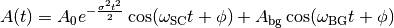

Sinusoidal function damped with Gaussian relaxation and a non-decaying oscillation:

where,
 is the amplitude of the background field oscillation,
is the amplitude of the background field oscillation,
 is the amplitude of the decaying oscillation due to internal field,
is the amplitude of the decaying oscillation due to internal field,
(rad/s) is the angular frequency of internal field,
(rad/s) is the angular frequency of background field,
 is the depolarization rate,
is the depolarization rate,
and  is the phase.
is the phase.
The relationship between  and magnetic field B is given by:
and magnetic field B is given by:

where,
 is the gyromagnetic ratio of muon.
is the gyromagnetic ratio of muon.
(Source code, png, hires.png, pdf)

| Name | Default | Description |
|---|---|---|
| A0 | 0.16 | Amplitude of interal field oscillation |
| Sigma | 0.2 | Gaussian decay rate |
| FieldSC | 300.0 | Internal Field (G) |
| FieldBG | 300.0 | External Field (G) |
| Phi | 0.0 | Phase |
| Abg | 0.1 | Amplitude of external field oscillation |
[1] J.A.T. Barker et al., Phys. Rev. Lett. 115 267001 (2015).
Categories: FitFunctions | Muon\MuonGeneric
Python: StandardSC.py (last modified: 2020-03-20)
{kind=link}
{kind=link}